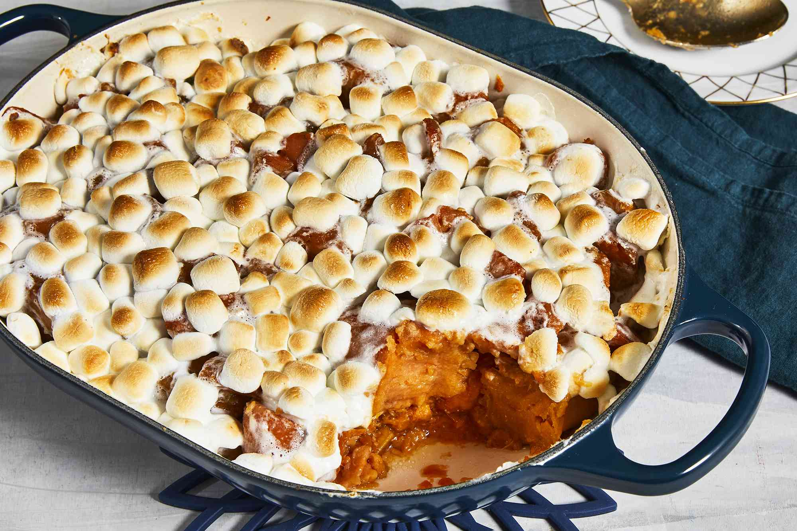

Candied Yams

Description
This candied yams recipe is a simple and quick way to enjoy a Thanksgiving favorite! Canned yams or sweet potatoes may be used.
Ingredients
- Canned sweet potatoes
- Butter
- Brown sugar
- Miniature marshmallows
Steps
Drain the syrup
This is a key move so your candied yams don't turn out runny due to too much liquid in the baking dish. Place the drained yams into a medium baking dish.Dice the butter
Cut the cold butter into small pieces and distribute them evenly over the yams.Sprinkle the brown sugar
Measure the brown sugar by packing it firmly into the measuring cup. Then transfer it to a bowl to break it up and make it easier to sprinkle. This is a good opportunity to crush any lumps in the brown sugar.Cover with mini marshmallows
This is where you might use more than the amount of marshmallows called for in the recipe, depending on how much surface area you're covering. You want them pretty close together so they'll make that signature toasted marshmallow topping that marshmallow-lovers love.Bake for 25 minutes at 400 degrees F (200 degrees C)
Because the yams are fully cooked already, what you're really doing is heating them up and toasting the marshmallows until they're golden and melty.